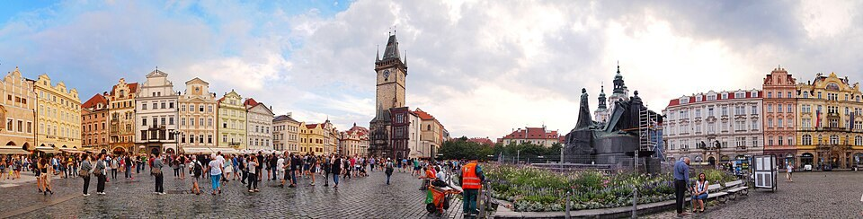

Óvárosi tér (Staroměstské náměstí)
Az Óvárosi térre érve érdemes először megállni a szélén, és végignézni a teljes nyitott teret. A gótikus tornyok, a városháza és a különböző korú polgárházak együtt adják Prága egyik legsűrűbb történelmi városképét. A tér központi szerepe a középkori kereskedőváros világába nyúlik vissza. A mai turistaforgalom helyén egykor piac, közélet és ünnepi események találkoztak.
A homlokzatokon sokféle korszakot fedezhetünk fel. A Kőharang háza gótikus emléket őriz, a Kinský palota rokokó világa későbbi reprezentációról beszél. A házsor mögött gyakran régebbi szerkezetek rejtőznek, mint amit a külső mutat. A tér így nem egyetlen stílus szépen megőrzött együttese, hanem hosszú városi változások közös eredménye.
Husz János emlékműve 1915-ben, a reformátor halálának ötszázadik évfordulóján került a térre. A nagy szoborcsoport a cseh vallási és nemzeti emlékezet fontos helye. Nézzük meg, hogyan különül el Husz alakja a körülötte csoportosuló figuráktól. Az alkotás nemcsak egy személyt, hanem követőket, vereséget és későbbi reményt is megjelenít.
A városháza közelében a burkolatba helyezett keresztek az 1621-ben kivégzett vezetők emlékét jelzik. A fehérhegyi vereség utáni megtorlás a cseh történelem egyik nagy törése volt. A tér vidám, mozgalmas mai képe mellett ez a részlet különösen erős ellenpont. Érdemes megállni előtte, mert a városi burkolatban gyakran könnyebb elkerülni egy emléket, mint egy magas szobrot.
A Týn templom tornyai szinte mesebeli sziluettet adnak a térnek. A városháza órája előtt közben rendszeresen kisebb tömeg gyűlik össze. A különböző látványok miatt könnyű egyik irányból a másikba sodródni. Most inkább keressünk egy nyugodtabb pontot, és figyeljük meg, hogyan keretezik a házak ezt a közös városi teret.
A tér jelentőségét az adja, hogy a nagy történelmi fordulatok és a mindennapi élet újra meg újra ugyanitt találkoztak. Egy kávéházi asztal, egy koncert vagy a harangszó is hozzáadhat valamit ehhez az élményhez. A következő megállókban külön nézzük meg az Orlojt és a Týn templomot. Előtte érdemes megőrizni a teljes tér képét, amelyben mindkét épület saját helyet kap.
50.087525, 14.421105